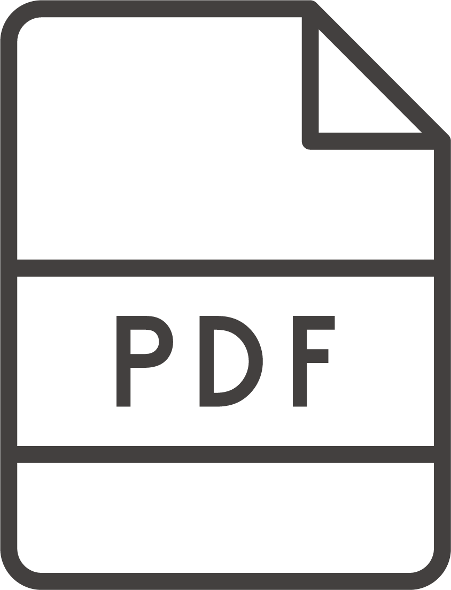
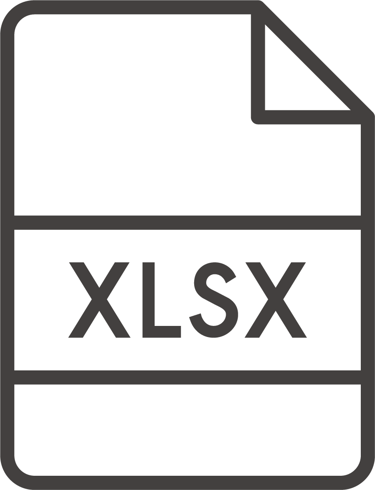

Revit・AutoCAD の作図を効率化するノウハウ集
28 Tools の各ツール・アドインの使い方や、作図を効率化するコツをまとめた記事の一覧です。気になるテーマから読んでみてください。
斜線・網掛け・目地・RC などの .pat ファイルを無料ツールで作成する手順。

2つの図面PDFを重ね、共通=グレー・旧=青・新=赤で変更点を確認する方法。

構造図PDFから梁・柱の符号・断面寸法・材質を自動抽出してExcel化する手順。